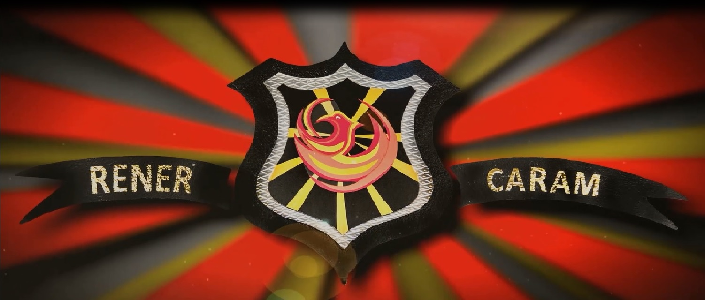

Meu primeiro parágrafo - Um pouco da história da escola.
E.E.PROF. RENÊR CARAM
Programa Ensino Integral de São Paulo - PEI A RENER CARAM PROFESSOR foi criada no dia 13/06/1988. Este ano a escola conta com uma grande novidade: fomos inseridos no Programa Ensino Integral - PEI e isso acarreta uma série de mudanças, leia o texto abaixo e clique no link para saber mais sobre esta nova etapa da nossa escola. Importante: horário das aulas - 7:30h às 17:00h (para todos os alunos - Ensino Fundamental e Ensino Médio) O PEI é destinado às unidades que atendem a segunda fase do ensino fundamental (6º ao 9º ano) e o ensino médio. Neste programa, os estudantes passam a ter uma matriz curricular diferenciada que inclui preparação para o mundo do trabalho, orientação de estudos, além dos clubes juvenis, em que os alunos se auto-organizam de acordo com seus temas de interesse, como dança, xadrez, debates, entre outros. Atualmente, o programa atende a 115 mil alunos – de um total de 1,5 milhão no ensino médio do estado. Estudos realizados no estado apontam que o ensino integral ajuda a melhorar a aprendizagem dos alunos e aumenta a empregabilidade e renda dos egressos. De acordo com a secretaria, os alunos do ensino médio das escolas do PEI tiveram desempenho no último Índice de Desenvolvimento da Educação do Estado de São Paulo (Idesp) 1,2 ponto maior em relação aos estudantes das escolas regulares. Outra vantagem do modelo, segundo a Seduc, é que ele permite que os professores atuem em regime de dedicação integral a uma escola, com mais tempo para estudo e preparação de aula. Para isso, recebem uma gratificação de 75% no salário-base. Hoje 417 escolas da rede estadual já funcionam nesta modalidade. (fonte:http://agenciabrasil.ebc.com.br) Diretrizes PEI
Um exemplo de aula/vídeo assincrona da escola:
Nosso Logo da Escola:

Um exemplo de aula assíncrona:
Veja também nossa pagina: Rede Social.
Este Video no site youtube sobre Robótica Pedagógica.